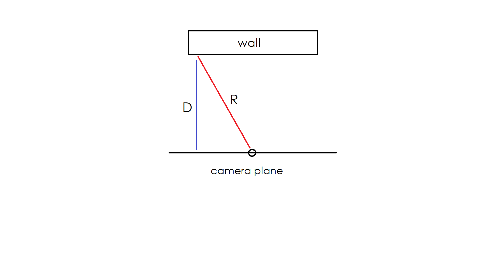

For more information on this topic read this article

Raycasting includes casting rays in a 2D scene and letting the rays intersect with flat walls in the scene. Information about how to render the walls in the 2D world onto the screen as pseudo-3D walls (as shown above) can then be gathered from the intersection.
When a ray is casted into our 2D scene we want to use information from its intersection with a wall in the scene to render a piece of a that wall on the screen. A piece of the wall is really referring to a collumn of pixels centered on the screen in the Y axis. To determine the height of the collumn we divide a predetermined length (for example, the height of the screen in pixels) by the distance between the wall and the camera plane.

In the image above, the red line 'R' represents a ray, and the blue line
'D' represents the distance between the wall and the camera plane. The
camera plane is just a line perpendicular to the direction the player is
facing. We will let the height of the screen in pixels be the standard
length of a collumn. The height of any collumn is therefore going to be
the sceenheight divided by D.
If you imagine casting a bunch of rays from the players position you might
be able to see how each pixel collumn (generated from each intersection in
the scene) next to eachother could resemble the scene. If we set the width
of a collumn to be the number of collumns (equal to the number of rays)
divided by the width of the screen in pixels we can nicely fit the
collumns on the screen (as long as the division gives an integer for the
pixel width).
The placement of a collumn on the screen in the X-axis is equal to the
ordinal number of the ray that created it times its width.
In order to actually find intersections with the rays we must first be able to represent 2D objects (walls in this case) in 2D space. Since raymarching works in a 2D plane it is easy to represent a grid-like world using a 2d array. We can then check if a point is intersecting with a wall by looking at the cell that contains the point. By gradually checking for intersections with points on the ray (with some stepsize or interval between each point) we can find out if the ray hits a wall at some point as long as the stepsize or interval between each point isn't too large or we might overshoot and miss walls.
For more information on this topic read this article